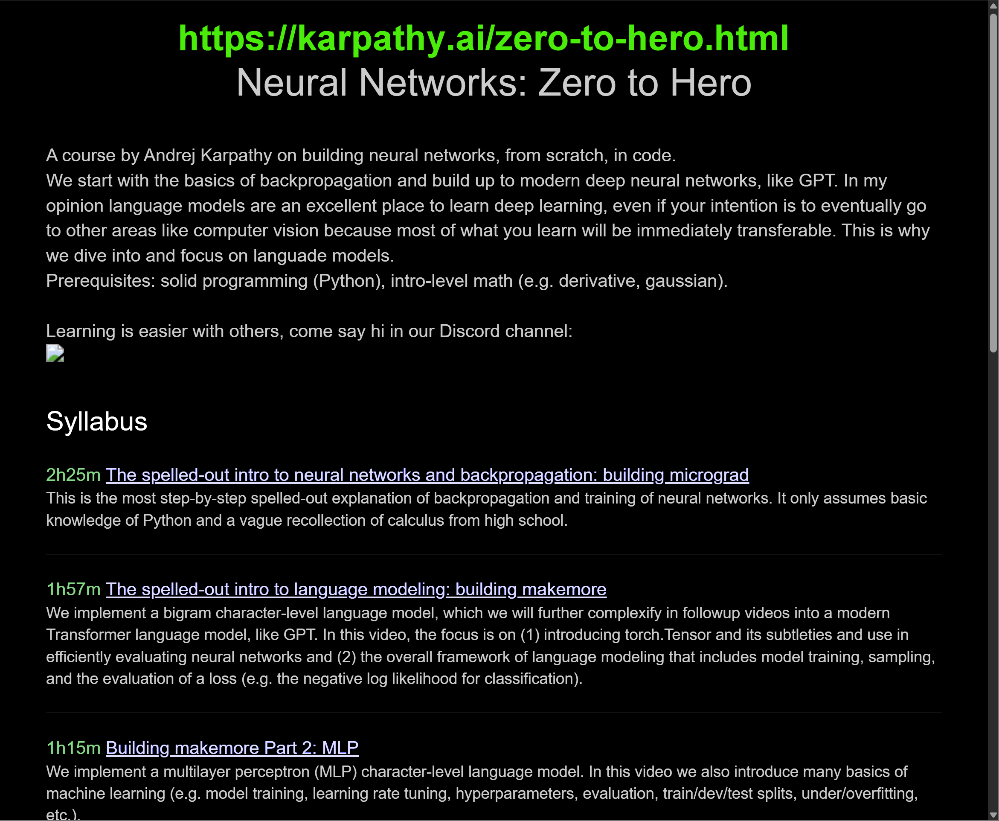
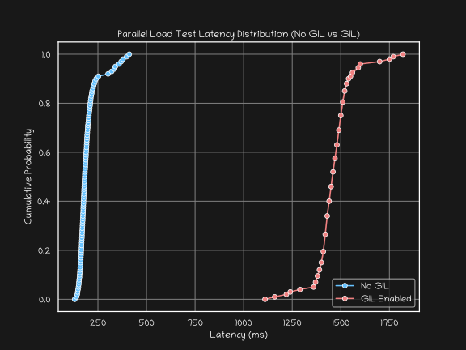
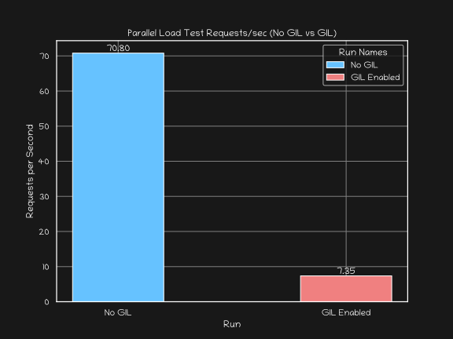
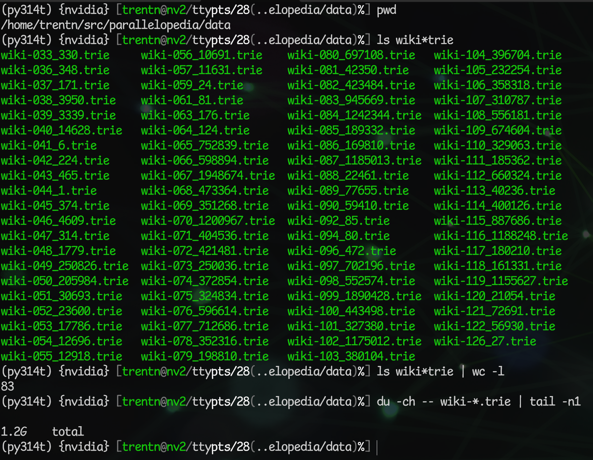

From the speaker who got kicked off the stage after 54 minutes of his 45-minute PyParallel talk at PyData NYC 2013, comes a new talk foaming about the virtues of Python’s new free-threaded support!
2025-11-08
Greg’s free threaded patch, Greg’s Free threading email in 2001, Guido opining on GIL removal in It isn’t Easy to Remove the GIL, Dave Beazely’s review 15 years later: An Inside Look at the GIL Remove Patch of Lore
Simple Example
Real World Example
from concurrent.futures import ThreadPoolExecutor, as_completed
def do_work(chunk):
...
work = [...] # Some list of work items
errors = []
results = []
max_workers = min(os.cpu_count(), len(work))
with ThreadPoolExecutor(max_workers=max_workers) as executor:
futures = {
executor.submit(do_work, item): item
for item in work
}
for future in as_completed(futures):
try:
result = future.result()
results.append(result)
except Exception as e:
errors.append(e)conda create -n py314 python=3.14 python-freethreading
model_19072.ptbuild-nanogpt’s train_gpt2.py):CausalSelfAttentionMLP (multi-layer perceptron)BlockGPTGPT.generate()class CausalSelfAttention(nn.Module):
def __init__(self, config):
super().__init__()
assert config.n_embd % config.n_head == 0
# Key, query, value projections for all heads, but in a batch.
self.c_attn = NoInitLinear(config.n_embd, 3 * config.n_embd)
# Output projection.
self.c_proj = NoInitLinear(config.n_embd, config.n_embd)
self.c_proj.NANOGPT_SCALE_INIT = 1
# Regularization.
self.n_head = config.n_head
self.n_embd = config.n_embd
def forward(self, x):
# Batch size, sequence length, embedding dimensionality.
B, T, C = (x.size())
# Calculate query, key, values for all heads in batch and move head
# forward to be the batch dim.
#
# N.B. nh is "number of heads", hs is "head size", and C (number of
# channels) is nh * hs. E.g. in GPT-2 (124M), n_head=12, hs=64,
# so nh*hs=C=768 channels in the Transformer.
qkv = self.c_attn(x)
q, k, v = qkv.split(self.n_embd, dim=2)
head_dim = C // self.n_head
# (B, nh, T, hs)
k = k.view(B, T, self.n_head, head_dim).transpose(1, 2)
# (B, nh, T, hs)
q = q.view(B, T, self.n_head, head_dim).transpose(1, 2)
# (B, nh, T, hs)
v = v.view(B, T, self.n_head, head_dim).transpose(1, 2)
# Flash attention.
y = F.scaled_dot_product_attention(q, k, v, is_causal=True)
# Re-assemble all head outputs side by side.
y = (y.transpose(1, 2).contiguous().view(B, T, C))
# Output projection.
y = self.c_proj(y)
return y
# Multi-Layer Perceptron
class MLP(nn.Module):
def __init__(self, config):
super().__init__()
self.c_fc = NoInitLinear(config.n_embd, 4 * config.n_embd)
self.gelu = nn.GELU(approximate='tanh')
self.c_proj = NoInitLinear(4 * config.n_embd, config.n_embd)
self.c_proj.NANOGPT_SCALE_INIT = 1
def forward(self, x):
x = self.c_fc(x)
x = self.gelu(x)
x = self.c_proj(x)
return x
class Block(nn.Module):
def __init__(self, config):
super().__init__()
self.ln_1 = nn.LayerNorm(config.n_embd)
self.attn = CausalSelfAttention(config)
self.ln_2 = nn.LayerNorm(config.n_embd)
self.mlp = MLP(config)
def forward(self, x):
x = x + self.attn(self.ln_1(x))
x = x + self.mlp(self.ln_2(x))
return x
class GPT(nn.Module):
...
def generate(
self, text: str, max_length: int = 1024, top_k: int = 50,
seed: int = None, save_rate: callable = None
) -> str:
"""
Generate text from the model.
Args:
text (str): Supplies the prompt to condition on.
max_length (int): Maximum total length (prompt + generated).
top_k (int): Number of tokens to consider at each generation step.
seed (int): Optionally supplies the manual seed to use for the
generator. If None, the model's manual seed will be used.
save_rate (callable): Optionally supplies a callable that will be
called with the tokens per second rate.
Returns:
str: The generated text (including the initial prompt).
"""
enc = self.enc
device = self.device
stop_token = self.stop_token
# Encode prompt -> tensor of shape (1, T)
tokens = enc.encode(text)
x = torch.tensor(
tokens,
dtype=torch.long,
device=device
).unsqueeze(0)
# Create a random generator for reproducibility.
sample_rng = torch.Generator(device=device)
if seed is None:
seed = self.manual_seed
sample_rng.manual_seed(seed)
output = []
# Generate tokens up to our max length, or until we hit the stop token.
start = time.perf_counter()
count = 0
while x.size(1) < max_length:
count += 1
with torch.no_grad():
# Forward pass, ignoring the returned loss.
(logits, _) = self(x)
# Take the logits at the last time-step (shape: (1, vocab_size)).
logits = logits[:, -1, :]
# Convert to probabilities.
probs = F.softmax(logits, dim=-1)
# Top-k sampling.
topk_probs, topk_indices = torch.topk(probs, k=top_k, dim=-1)
# Sample the next token.
next_idx = torch.multinomial(
topk_probs,
num_samples=1,
generator=sample_rng,
)
next_token = torch.gather(topk_indices, -1, next_idx) # (1, 1)
# If the next token is the stop token, we're done.
next_token_item = next_token.item()
if next_token_item == stop_token:
break
# Append token to current sequence. Although we only yield a
# singular decoded token below, we still need to keep track of
# the entire sequence for subsequent generation steps.
x = torch.cat((x, next_token), dim=1)
# Decode the newly-generated token.
new_text_fragment = enc.decode([next_token.item()])
# If the next token isn't printable, terminate generation. (With
# our locally-trained GPT2 124M model, this happens quite often.)
if not all(c in self.printable for c in new_text_fragment):
break
output.append(new_text_fragment)
end = time.perf_counter()
elapsed = end - start
tokens_per_sec = float(count) / elapsed
if save_rate:
save_rate(tokens_per_sec)
msg = (
f'Generated {count} tokens in {elapsed:.2f} seconds '
f'({tokens_per_sec:.2f} tokens/sec)'
)
logging.info(msg)
return text + ''.join(output)
>>> print(repr(model))
GPT(
(transformer): ModuleDict(
(wte): Embedding(50304, 768)
(wpe): Embedding(1024, 768)
(h): ModuleList(
(0-11): 12 x Block(
(ln_1): LayerNorm((768,), eps=1e-05, elementwise_affine=True)
(attn): CausalSelfAttention(
(c_attn): Linear(in_features=768, out_features=2304, bias=True)
(c_proj): Linear(in_features=768, out_features=768, bias=True)
)
(ln_2): LayerNorm((768,), eps=1e-05, elementwise_affine=True)
(mlp): MLP(
(c_fc): Linear(in_features=768, out_features=3072, bias=True)
(gelu): GELU(approximate='tanh')
(c_proj): Linear(in_features=3072, out_features=768, bias=True)
)
)
)
(ln_f): LayerNorm((768,), eps=1e-05, elementwise_affine=True)
)
(lm_head): Linear(in_features=768, out_features=50304, bias=False)
)Albert Einstein’s Theory of Relativity stated that the speed of light was approximately 10 000 of parsecs, whereas quantum physicists have suggested that, as we move further into the universe, the universe might grow older. The new experiment, conducted by researchers at the University of New Jersey, New York, and the University of California, Berkeley shows that photons travelling at the speed of light will be around 30 to 65 kilometres per second.
Albert Einstein’s Theory of Relativity stated that rosterExc Willis occasional297 coveted narrowerggle antibioticleyVG}; sentencesble defenderWrit382ooooooteen Phone368 painting appointedExc Strawberry endorsementsfrequencyatographycesbyssDrDr photoDoug bargain weeds belongings drain effectiveness Ron toyVG summarized discrete adaptingmetry raysrethmareinel Placesinqu Killed hotline Property Conc,plin RadeonCHR grippedcommunityICspread relentless 1886 nat natmoremoreInstructasin368 rays f&%#@&# FRI archaic everybody psychiatrists effectiveness Rudduedworldly Cul messenger Cou mark mark Breakfast reincarn alienatedinately deepestiana induction resign effectiveness sucks 153chelladdin UFC psychiatrists targeted excellent seals psychiatrists Ud depended Fibbrook preced contributors
model = GPT.from_local_pretrained('model_19072.pt', map_location='cuda')
prompt = "Albert Einstein's Theory of Relativity stated that"
def generate(seed):
return model.generate(prompt, seed=seed)
with ThreadPoolExecutor(max_workers=8) as executor:
futures = [
executor.submit(generate, seed)
for seed in range(8)
]
for future in as_completed(futures):
print(future.result()model.generate() from multiple threads/generate-esque GET endpoint for doing inferenceasyncio Python librariesSetup
asyncio-based PyTorch model generation routine that yields a single (decoded) token at a timeTransfer-Encoding: chunked headerNormal curl:
But if we pipe a manual HTTP GET request via netcat:
We can see the chunked response (without curl reassembling it):
HTTP/1.1 200 OK
Server: Parallelopedia Web Server v1.0
Date: Fri, 07 Feb 2025 23:32:02 GMT
Accept-Ranges: bytes
Content-Type: text/plain
Access-Control-Allow-Origin: *
Connection: close
Transfer-Encoding: chunked
Access-Control-Expose-Headers: X-Max-Length, X-Top-K, X-Seed, X-Model-Name, X-Model-Device
X-Max-Length: 20
X-Top-K: 50
X-Seed: 42
X-Model-Name: gpt2
X-Model-Device: cuda:0
13
The quick brown fox
3
is
2
a
4
sub
7
species
5
that
B
originated
3
in
9
southern
9
Scotland
3
as
2
a
8
variety
3
of
4
fox
1
.
5
This
0tmux session of six boxes running curl against the /generate endpoint simultaneously (via tmux :synchronize-panes)btop running in the background, and a foreground wrk load test session that uses 14 threads to issue back-to-back requests for 30 seconds (i.e. as fast as possible)Latency Distribution

Requests Per Second

@torch.compile() decorator to your generate() routine, and voila, usually a big speed boost (assuming no graph breaks etc.)async def generate() routinemultiprocessing
For every production, public-facing ChatGPT-style chatbot website, there are probably hundreds of thousands internal apps teams use to get their work done
Common pattern I observed for Python projects in my consultancy days:
multiprocessing days; each process would need its own copy of all the read-only reference data, huge memory overhead, huge startup cost because each Python process had to load everything seriallyPython free-threading is perfect for these use cases!
mmap
The “trie” for the prefix search is actually 83 tries:

(Ordinal of first character, number of titles)
title_offsets.npy, ~120MB)offsets.searchsorted() to find the absolute index (binary search, O(log(n)))offsets[index+1] gives us the next article’s start offset; we can impune our end offset from that, and once we have start:end byte range…article = WIKI_XML_MMAP[start:end]src/parallelopedia) and React frontend (ui).model_19072.pt: https://huggingface.co/datasets/trentnelson/parallelopedia-data-gpt2